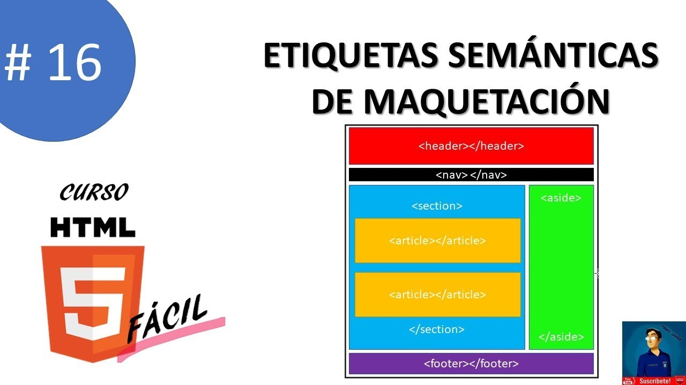
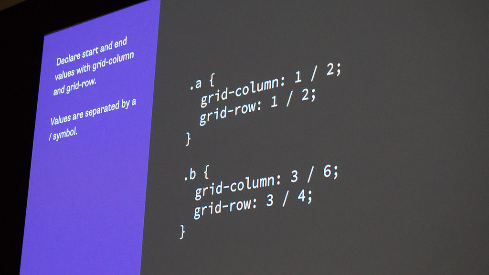

El proposito de esta pagima es a traves de recursos educativos digitales profundizar el aprendizaje de los temas de Diseño de sitios Web,
Etiquetas Semánticas
Las etiquetas semánticas ayudan a definir la estructura del documento y permiten que las páginas web sean mejor indexadas por los buscadores
Diez, T., Domínguez, M. J., Martínez, J. J., & Sáenz, J. (2012). Creación de páginas Web accesibles con HTML5.Recuperado de. http://www.esvial.org/wp-content/files/Atica2012_pp120-129.pdf

CSS Grid
Las CSS (cascade style sheets) u hojas de estilo nos sirven para separar el contenido de una presentación, estas sirven para indicar el formato de cualquier elemento de nuestro codigo HTML. Simplemente obviamos toda la informacion sobre el formato en el codigo HTML e indicamos el fichero CSS donde la hemos centralizado
Recio García, J. A. (2016). HTML5, CSS3 y JQuery: curso práctico. RA-MA Editorial. (Pág. 52 a 142) Recuperado de https://elibro-net.bibliotecavirtual.unad.edu.co/es/ereader/unad/106494?page=52
